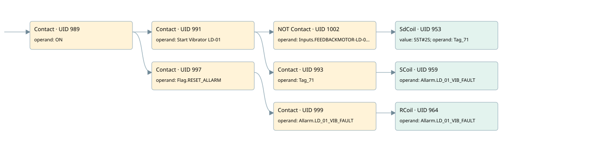

ld01 vibrator
allarms 1 · 검색 색인 순서 26 · 원본 내부 NID 추정 28
백업 PLF 원본의 3056934 바이트 위치에서 복원한 XML. 검색 문서 1806의 객체 키 161022006c62000000000000와 연결했다. 이름 해석 10/10개. 남은 RefId는 상수 또는 미해석 참조다.
연결 구조 다시 그리기
원본 Part/PCon/Wire를 이용한 연결도다. TIA 화면의 래더 배치 또는 실행 결과를 재현한 그림은 아니다. 핀 연결은 아래 표와 원본 XML을 기준으로 읽는다. 노드 위에 마우스를 두면 피연산자 이름을 볼 수 있다.

접점·코일·블록과 피연산자
| Part UID | Gate | Negated 핀 | 연결 피연산자 |
|---|---|---|---|
| 989 | Contact | operand = ON | |
| 991 | Contact | operand = Start Vibrator LD-01 | |
| 1002 | Contact | operand | operand = Inputs.FEEDBACKMOTOR-LD-01A |
| 953 | SdCoil | value = S5T#2S; operand = Tag_71 | |
| 993 | Contact | operand = Tag_71 | |
| 959 | SCoil | operand = Allarm.LD_01_VIB_FAULT | |
| 997 | Contact | operand = Flag.RESET_ALLARM | |
| 999 | Contact | operand = Allarm.LD_01_VIB_FAULT | |
| 964 | RCoil | operand = Allarm.LD_01_VIB_FAULT |
접점 경로를 펼친 조건식
Contact·O/A·비교기의 원본 연결을 읽기 쉽게 펼친 보조 해석이다. POWER는 전원 레일 시작을 뜻한다. 호출 블록·에지·타이머의 내부 동작과 다중 쓰기 순서는 이 표로 실행 검증하지 않았다. 미해석 핀과 RefId는 원문 연결표에서 확인한다.
| UID | 동작 | 대상 | 원본 접점 경로 | 내용 |
|---|---|---|---|---|
| 953 | SdCoil | Tag_71 | ((ON AND Start Vibrator LD-01) AND NOT [Inputs.FEEDBACKMOTOR-LD-01A]) | 시간 동작 SdCoil; 타이머 의미 추가 확인 / 시간 인자 S5T#2S |
| 959 | SCoil | Allarm.LD_01_VIB_FAULT | ((ON AND Start Vibrator LD-01) AND Tag_71) | 조건 성립 시 Set |
| 964 | RCoil | Allarm.LD_01_VIB_FAULT | ((ON AND Flag.RESET_ALLARM) AND Allarm.LD_01_VIB_FAULT) | 조건 성립 시 Reset |
원본 배선 연결
| Wire UID | 동일 Wire 연결 끝점 |
|---|---|
| 1001 | Powerrail {} ↔ Part 989.in |
| 975 | ORef 965 (ON) ↔ Part 989.operand |
| 990 | Part 989.out ↔ Part 991.in ↔ Part 997.in |
| 976 | ORef 966 (Start Vibrator LD-01) ↔ Part 991.operand |
| 992 | Part 991.out ↔ Part 1002.in ↔ Part 993.in |
| 1005 | ORef 1003 (Inputs.FEEDBACKMOTOR-LD-01A) ↔ Part 1002.operand |
| 21 | Part 1002.out ↔ Part 953.in |
| 977 | ORef 967 (S5T#2S) ↔ Part 953.value |
| 978 | ORef 968 (Tag_71) ↔ Part 953.operand |
| 979 | ORef 969 (Tag_71) ↔ Part 993.operand |
| 22 | Part 993.out ↔ Part 959.in |
| 982 | ORef 971 (Allarm.LD_01_VIB_FAULT) ↔ Part 959.operand |
| 984 | ORef 972 (Flag.RESET_ALLARM) ↔ Part 997.operand |
| 998 | Part 997.out ↔ Part 999.in |
| 985 | ORef 973 (Allarm.LD_01_VIB_FAULT) ↔ Part 999.operand |
| 1000 | Part 999.out ↔ Part 964.in |
| 987 | ORef 974 (Allarm.LD_01_VIB_FAULT) ↔ Part 964.operand |
식별자 해석 근거 10개
| ORef UID | RefId | 이름 | IdentXmlPart 파일 | 해석 방법 |
|---|---|---|---|---|
| 965 | 1 | ON | 0658-IdentXmlPart.xml | UID/RID + search-text + NID agreement |
| 966 | 114 | Start Vibrator LD-01 | 0658-IdentXmlPart.xml | UID/RID + search-text + NID agreement |
| 1003 | 295 | Inputs.FEEDBACKMOTOR-LD-01A | 0657-IdentXmlPart.xml | UID/RID + search-text + NID agreement |
| 968 | 115 | Tag_71 | 0658-IdentXmlPart.xml | UID/RID + search-text + NID agreement |
| 967 | 28 | S5T#2S | 0656-IdentXmlPart.xml | literal candidate: UID/RID/NID + nearby named declarations + search-text agreement |
| 969 | 115 | Tag_71 | 0658-IdentXmlPart.xml | UID/RID + search-text + NID agreement |
| 971 | 117 | Allarm.LD_01_VIB_FAULT | 0657-IdentXmlPart.xml | UID/RID + search-text + NID agreement |
| 972 | 13 | Flag.RESET_ALLARM | 0657-IdentXmlPart.xml | UID/RID + search-text + NID agreement |
| 973 | 117 | Allarm.LD_01_VIB_FAULT | 0657-IdentXmlPart.xml | UID/RID + search-text + NID agreement |
| 974 | 117 | Allarm.LD_01_VIB_FAULT | 0657-IdentXmlPart.xml | UID/RID + search-text + NID agreement |
검색 코드 보조 자료
참조 명칭을 찾기 위한 자료이며 실행 순서나 AND/OR 관계는 위 연결표로 확인한다.
"on" "start vibrator ld-01" "inputs"."feedbackmotor-ld-01a" "tag_71" s5t#2s "flag".reset_allarm "allarm".ld_01_vib_fault "allarm".ld_01_vib_fault "tag_71" "allarm".ld_01_vib_fault